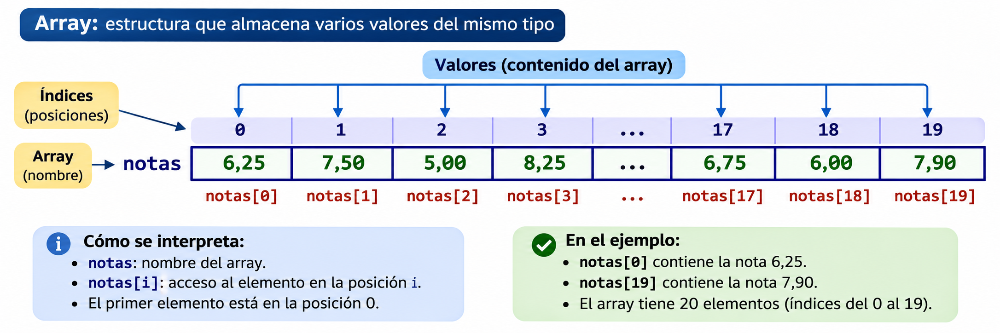
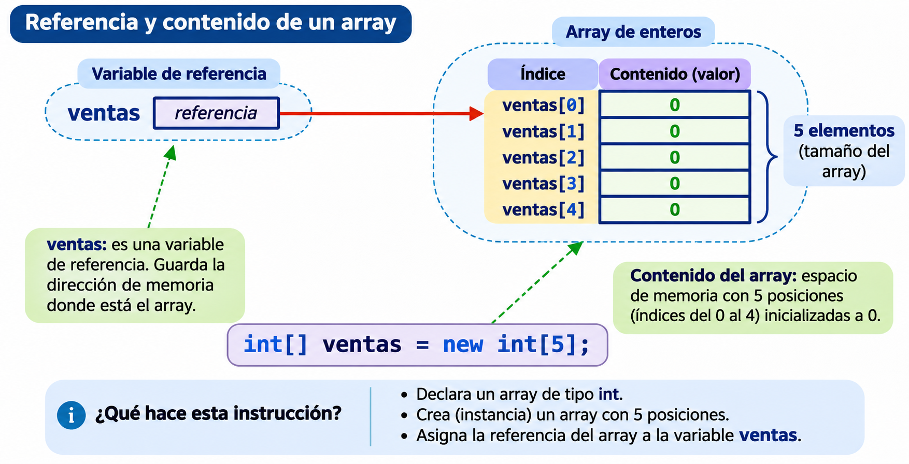

UT 05. Arrays en Java: creación e inicialización¶
1. ¿Qué es un array?¶
Un array es un objeto que almacena un número fijo de elementos de un mismo tipo. Permite agrupar datos relacionados bajo un único nombre.
Por ejemplo, en lugar de declarar una variable para cada temperatura:
double temperaturaLunes = 18.5;
double temperaturaMartes = 19.0;
double temperaturaMiercoles = 17.5;
Podemos crear un array:
double[] temperaturas = {18.5, 19.0, 17.5};
Sus características básicas son:
- Cada elemento se identifica mediante un índice.
- Los índices comienzan en 0.
- El tamaño queda fijado al crear el array.
- Los valores almacenados deben ser compatibles con el tipo de sus elementos.
- Un array puede contener valores primitivos o referencias a objetos, como
String.
Este apartado se centra en arrays unidimensionales, su declaración, creación e inicialización.
1.1. Posiciones e índices¶
int[] edades = {18, 21, 19, 20};
| Índice | 0 | 1 | 2 | 3 |
|---|---|---|---|---|
| Valor | 18 | 21 | 19 | 20 |
Para acceder a una posición utilizamos los corchetes:
System.out.println(edades[0]); // 18: primer elemento
System.out.println(edades[3]); // 20: cuarto elemento
El tamaño no es el último índice
Un array de cuatro elementos tiene índices de 0 a 3. La posición edades[4] no existe. Intentar acceder a ella provoca ArrayIndexOutOfBoundsException.


En la imagen, notas[0] corresponde al primer alumno y notas[19] al vigésimo alumno.
2. Declarar, crear e inicializar¶
Conviene distinguir estas tres ideas:
| Concepto | Significado | Ejemplo |
|---|---|---|
| Declarar | Declarar una variable de referencia de tipo array. | int[] edades; |
| Crear o instanciar | Crear el objeto array con un número determinado de elementos. | edades = new int[3]; |
| Inicializar los elementos | Establecer sus valores iniciales, automáticamente o mediante valores explícitos. | int[] edades = {18, 21, 19}; |
La creación con new int[3] también inicializa automáticamente sus elementos a cero. No existe un array de enteros recién creado con elementos sin inicializar.
3. Declaración de un array¶
La sintaxis recomendada es:
tipo[] nombreArray;
Ejemplos:
int[] unidades;
double[] temperaturas;
char[] grupos;
boolean[] asistencias;
String[] ciudades;
Java también permite colocar los corchetes después del nombre:
int unidades[];
Se recomienda int[] unidades, porque muestra el tipo completo junto: «array de enteros».
Declarar no crea el array
Dentro de un método, una variable local como int[] unidades; no recibe automáticamente un valor. Antes de utilizarla hay que asignarle una referencia, por ejemplo con unidades = new int[4];.
int[] unidades; // Variable local declarada
unidades = new int[4]; // Array creado y referencia asignada
System.out.println(unidades[0]); // 0
4. Creación con new¶
4.1. Declaración y creación en una instrucción¶
tipo[] nombreArray = new tipo[tamaño];
int[] unidades = new int[6];
double[] temperaturas = new double[7];
char[] grupos = new char[3];
boolean[] asistencias = new boolean[5];
String[] ciudades = new String[4];
En new int[6]:
newcrea un objeto array.intes el tipo de cada elemento.6es el número de elementos, cuyas posiciones van de0a5.
4.2. Tamaño mediante una variable o expresión¶
El tamaño puede calcularse durante la ejecución:
int numeroDias = 7;
double[] temperaturas = new double[numeroDias];
int filas = 4;
int puestosPorFila = 6;
boolean[] puestosOcupados = new boolean[filas * puestosPorFila];
Una vez creado, cambiar la variable utilizada para el tamaño no modifica el array:
int cantidad = 3;
int[] unidades = new int[cantidad];
cantidad = 8;
System.out.println(unidades.length); // 3
4.3. Tamaño y propiedad length¶
La propiedad length indica cuántos elementos tiene el array. Se escribe sin paréntesis.
String[] ciudades = {"Elche", "Alicante", "Valencia"};
System.out.println(ciudades.length); // 3
System.out.println(ciudades[ciudades.length - 1]); // Valencia
Tamaño fijo
El array conserva su tamaño durante toda su existencia. La variable puede apuntar después a otro array, pero eso no cambia el tamaño del objeto original.
4.4. Array vacío y tamaño negativo¶
Un tamaño cero es válido:
int[] unidades = new int[0];
System.out.println(unidades.length); // 0
Un array vacío existe, pero no tiene ninguna posición a la que acceder. No se puede utilizar unidades[0].
Un tamaño negativo provoca NegativeArraySizeException:
// Incorrecto en ejecución:
// int[] unidades = new int[-2];
En los ejemplos habituales de este tema se utiliza un tamaño de tipo int. Un decimal, como new int[3.5], no es válido.
5. Inicialización automática¶
Cuando creamos un array indicando el tamaño, Java asigna un valor predeterminado a todos sus elementos.
| Tipo de elemento | Valor predeterminado |
|---|---|
byte, short, int, long |
Cero entero |
float, double |
Cero en coma flotante |
char |
'\u0000', carácter nulo |
boolean |
false |
String y otras referencias |
null |
int[] cantidades = new int[3];
double[] medidas = new double[2];
boolean[] disponibles = new boolean[4];
String[] nombres = new String[2];
char[] letras = new char[2];
System.out.println(cantidades[0]); // 0
System.out.println(medidas[0]); // 0.0
System.out.println(disponibles[0]); // false
System.out.println(nombres[0]); // null
System.out.println((int) letras[0]); // 0: valor numérico del carácter nulo
null no es una cadena vacía
En new String[2] se crea el array, pero no se crean dos cadenas de texto. Sus dos posiciones contienen null. Una cadena vacía se representa con "".
String[] sinAsignar = new String[2]; // {null, null}
String[] vacias = {"", ""}; // Dos cadenas vacías
El carácter nulo '\u0000' tampoco es el espacio ' ' ni el carácter '0'.
6. Inicialización con valores explícitos¶
6.1. Valores entre llaves en la declaración¶
Si conocemos los valores iniciales, podemos escribirlos entre llaves, separados por comas:
int[] unidades = {12, 8, 15, 6};
double[] temperaturas = {18.5, 21.0, 19.75};
char[] grupos = {'A', 'B', 'C'};
boolean[] disponibles = {true, false, true};
String[] ciudades = {"Elche", "Alicante", "Valencia"};
Esta sintaxis declara la variable, crea el array e inicializa sus elementos. El número de valores determina su tamaño.
int[] unidades = {12, 8, 15, 6};
System.out.println(unidades.length); // 4
Los valores deben respetar la sintaxis del tipo:
- Los decimales se escriben con punto:
18.5. - Los caracteres llevan comillas simples:
'A'. - Las cadenas llevan comillas dobles:
"Elche". - Los booleanos son
trueyfalse, sin comillas.
6.2. Inicialización explícita con new tipo[]¶
También podemos escribir:
int[] unidades = new int[] {12, 8, 15, 6};
En esta forma, los corchetes de new int[] quedan vacíos: el tamaño se deduce de la lista de valores.
Esta sintaxis permite separar la declaración y la asignación:
int[] unidades;
unidades = new int[] {12, 8, 15, 6};
Las llaves solas solo sirven como inicializador en la declaración
Después de declarar la variable, no se puede escribir unidades = {12, 8, 15, 6};. Hay que utilizar unidades = new int[] {12, 8, 15, 6};.
Tampoco se combinan tamaño y lista de valores:
// Incorrecto: no compila.
// int[] unidades = new int[4] {12, 8, 15, 6};
// Correcto:
int[] unidades = new int[] {12, 8, 15, 6};
6.3. Valores calculados y compatibilidad de tipos¶
Los valores iniciales también pueden proceder de variables o expresiones:
int base = 10;
int[] cantidades = {base, base * 2, base + 5}; // {10, 20, 15}
double[] medidas = {2, 3.5, 4}; // Los enteros se convierten a double
float[] pesos = {2.5f, 3.75f}; // Sufijo f en los literales float
long[] distancias = {100L, 3_000_000_000L};
No se puede introducir directamente un decimal en un array de enteros:
// Incorrecto: 3.5 es double y no puede convertirse implícitamente a int.
// int[] cantidades = {2, 3.5, 4};
6.4. Inicialización por posiciones¶
Otra opción consiste en crear el array y asignar los valores de cada posición:
String[] ciudades = new String[3];
ciudades[0] = "Elche";
ciudades[1] = "Alicante";
ciudades[2] = "Valencia";
Técnicamente, el array ya se había inicializado automáticamente con null; las asignaciones posteriores sustituyen esos valores.
Si solo asignamos algunas posiciones, las demás conservan su valor predeterminado:
int[] unidades = new int[4];
unidades[0] = 12;
unidades[2] = 15;
// Contenido: {12, 0, 15, 0}
7. Referencia y contenido¶
En esta instrucción:
int[] edades = new int[3];
edadeses una variable que almacena una referencia al array.new int[3]crea el objeto array.- Sus elementos son
edades[0],edades[1]yedades[2], inicialmente a cero.


Una referencia permite acceder al objeto; Java no permite manipular directamente su dirección de memoria.
7.1. Referencia null frente a array vacío¶
| Declaración | ¿Existe un array asignado? | Consecuencia |
|---|---|---|
int[] datos = null; |
No | Acceder a datos.length provoca NullPointerException. |
int[] datos = new int[0]; |
Sí, sin elementos | datos.length vale 0. |
int[] datos = new int[3]; |
Sí, con tres elementos | datos.length vale 3; sus elementos valen 0. |
7.2. Asignar una referencia no crea otro array¶
int[] original = {10, 20, 30};
int[] otraReferencia = original;
Aquí existe un solo array, al que apuntan dos variables. La segunda instrucción no crea ni copia sus elementos.
8. Ejemplos completos¶
Los fragmentos anteriores pueden escribirse dentro de main. Cada programa siguiente se guarda en un fichero con el mismo nombre que su clase pública.
8.1. Distintas formas de crear e inicializar¶
Fichero: CreacionArrays.java
public class CreacionArrays {
public static void main(String[] args) {
int[] cantidades;
cantidades = new int[3];
double[] temperaturas = {18.5, 20.0, 17.25};
char[] grupos = new char[] {'A', 'B'};
boolean[] disponibles = new boolean[2];
String[] ciudades = new String[2];
ciudades[0] = "Elche";
ciudades[1] = "Alicante";
System.out.println("Cantidad inicial: " + cantidades[0]);
System.out.println("Primera temperatura: " + temperaturas[0]);
System.out.println("Segundo grupo: " + grupos[1]);
System.out.println("Disponible inicialmente: " + disponibles[0]);
System.out.println("Primera ciudad: " + ciudades[0]);
System.out.println("Número de ciudades: " + ciudades.length);
}
}
Salida:
Cantidad inicial: 0
Primera temperatura: 18.5
Segundo grupo: B
Disponible inicialmente: false
Primera ciudad: Elche
Número de ciudades: 2
8.2. Tamaño introducido por teclado¶
Fichero: ArrayConTamano.java
import java.util.Scanner;
public class ArrayConTamano {
public static void main(String[] args) {
Scanner teclado = new Scanner(System.in);
System.out.print("Número de posiciones (0 o mayor): ");
int cantidad = teclado.nextInt();
if (cantidad >= 0) {
int[] unidades = new int[cantidad];
System.out.println("Posiciones creadas: " + unidades.length);
} else {
System.out.println("El tamaño no puede ser negativo.");
}
teclado.close();
}
}
El ejemplo presupone que se introduce un entero. Se admite el tamaño cero porque Java permite arrays vacíos.
8.3. Valores iniciales introducidos por teclado¶
Fichero: InicializarTemperaturas.java
import java.util.Locale;
import java.util.Scanner;
public class InicializarTemperaturas {
public static void main(String[] args) {
Scanner teclado = new Scanner(System.in);
teclado.useLocale(Locale.US);
double[] temperaturas = new double[3];
System.out.print("Primera temperatura (usa punto decimal): ");
temperaturas[0] = teclado.nextDouble();
System.out.print("Segunda temperatura: ");
temperaturas[1] = teclado.nextDouble();
System.out.print("Tercera temperatura: ");
temperaturas[2] = teclado.nextDouble();
System.out.println("Valores iniciales registrados:");
System.out.println(temperaturas[0]);
System.out.println(temperaturas[1]);
System.out.println(temperaturas[2]);
teclado.close();
}
}
Se asignan las tres posiciones de forma explícita para centrar el ejemplo en la inicialización. Locale.US establece el punto como separador decimal en la lectura.
Actividades¶
-
AC 501 (RA6 /CE6a / IC1/ 1p) Declara de forma adecuada el array que sea necesario en cada caso:
- a. Se quiere almacenar la evolución del precio del combustible por litro en una gasolinera concreta. Por ejemplo: 1.677 €/litro.
- b. Una tienda de ropa necesita almacenar un listado con los productos que van a tener precio rebajado a partir del mes de enero. Por ejemplo: “Jersey de lana”
- c. Se necesita guardar las notas finales de la 1ª evaluación de un grupo de alumnos.
- d. El sistema de acceso de una empresa requiere almacenar en un array la letra del dni sus empleados para controlar la entrada a cierta zona restringida.
-
AC 502 (RA6 /CE6a / IC1/ 1p) Crea el array adecuado para cada caso asignándole los valores que se indican:
- a. Se quiere almacenar la evolución del precio del combustible por litro en una gasolinera concreta durante la última semana. 1.677 1.674 1.668 1.668 1.663 1.657 1.655
- b. Una tienda de ropa necesita almacenar 4 productos que van a tener precio rebajado a partir del mes de enero. Sudadera con bolsillos Chaleco largo acolchado Chaqueta biker Pantalón skinny
- c. Se necesita guardar las notas finales de la 1ª evaluación de un grupo pequeño de 5 alumnos. 7 8 4 5 9
- d. El sistema de acceso de una pequeña empresa requiere almacenar en un array la letra del dni sus 10 empleados para controlar la entrada a cierta zona restringida. G T B R A K S U E H